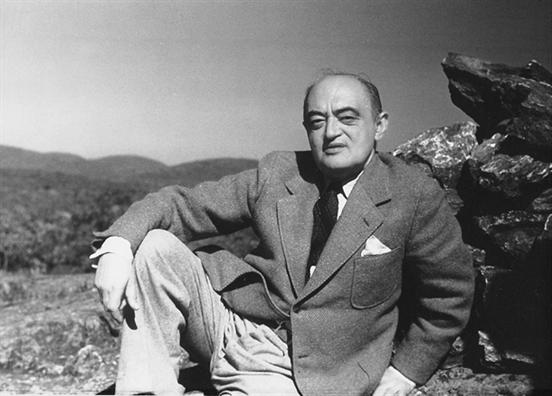

Schumpeter claimed that he had set himself three goals in life:
- to be the greatest economist in the world,
- to be the best horseman in all of Austria,
- and to be the greatest lover in all of Vienna.
This is info about Joseph Schumpeter. Read more about him at his
Wikipedia page.